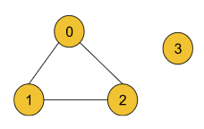
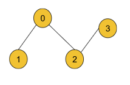
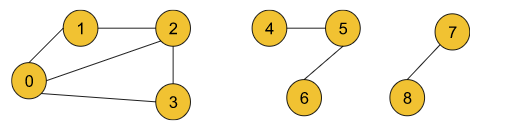
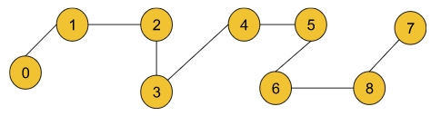
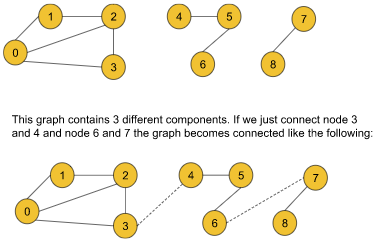
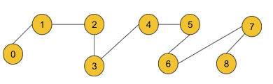
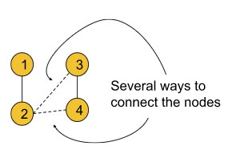
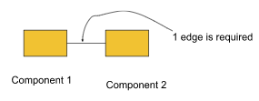
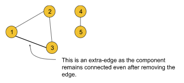

Number of Operations to Make Network Connected - DSU: G-49.
Problem Statement: You are given a graph with n vertices and m edges. You can remove one edge from anywhere and add that edge between any two vertices in one operation. Find the minimum number of operations that will be required to make the graph connected. If it is not possible to make the graph connected, return -1.
Input Format: N = 4, M = 3, Edge[] =[ [0, 1], [ 0, 2], [1, 2]]
Result: 1
Explanation: We need a minimum of 1 operation to make the two components connected. We can remove the edge (1,2) and add the edge between node 2 and node 3 like the following:

Example 2:
Input Format: N = 9, M = 8, Edge[] = [[0,1],[0,2],[0,3],[1,2],[2,3],[4,5],[5,6],[7,8]]
Result: 2
Explanation: We need a minimum of 2 operations to make the two components connected. We can remove the edge (0,2) and add the edge between node 3 and node 4 and we can remove the edge (0,3) and add it between nodes 6 and 8 like the following:

Solution
Disclaimer: Don't jump directly to the solution, try it out yourself first.
Before discussing the solution, let’s understand the question. In the question, it is clearly stated that our objective is to make the given graph connected. Now, we can do this by just connecting the different components of a given graph with some edges like the following:

But according to the question, we cannot add random edges from outside rather we can remove any given edge and add that to a new position to fulfill the purpose. So, one of the correct ways to connect the above graph will be the following:

There may be several other possible ways to make the graph connected. In this graph, We have removed the edge (0,2) and added it between node 3 and node 4 and we have also removed the edge (0,3) and added it between nodes 6 and 8 to make the components connected.
Note: In order to add any edge to the desired position, we must take it out from somewhere inside the graph. We cannot add any edge randomly from outside. So, the intuition is to remove the required minimum number of edges and plant them somewhere in the graph so that the graph becomes connected.
Observation 1: How can we connect components to make the graph connected?
In order to connect two different components of a graph we need to connect any node of the first component to any node of the second component. For example, if we have a graph like the following we can connect them in several ways like connecting nodes 2 and 3 or connecting nodes 2 and 4, and so on.

Observation 2:
From the method of connecting the components, discussed above, we can conclude that we need a minimum of nc-1 edges to make the graph connected if the graph contains nc number of different components.

For example, the above graph has two different components and so to make it connected we need a minimum of 1 edge. Similarly, if a graph contains a single component we need 0 edges to make it connected. We need to remove the edges in such a way that the components remain connected even after removing those edges. We can assume these types of edges as extra-edges.

Until now, we have found that we need a minimum of nc-1 edges (nc = no. of components of the graph) to make the graph connected. And according to the question, to add these nc-1 edges, the graph must contain a minimum of nc-1 extra edges.
So, we can conclude that if a graph contains nc-1 extra-edges, we can make the graph connected with just nc-1 operations(where nc = no. of components of the graph).
Approach:
In order to solve this question we will first find out the number of extra-edges and then we will find out the number of components of the graph. We will be using the Disjoint Set data structureto do so.
The algorithm steps are the following:
First we need to extract all the edge information (If not already given) in the form of the pair (u, v) where u = starting node and v = ending node. We should store all the edge information in an array.
Then we will iterate through the array selecting every pair and checking the following:
If the ultimate parent of u and v(checked using the findPar() method of the Disjoint set) becomes the same, we should increase the count of extra-edges by 1. Because the same ultimate parent means the nodes are already connected and so we can consider the current edge as an extra edge.
But if the ultimate parents are different, then we should apply the union(either unionBySize() or unionByRank()) method on those two nodes.
Thus we will get the count of the extra edges. Now it’s time to count the number of components. In order to do so, we will just count the number of the nodes that are the ultimate parent of themselves.
We will iterate over all the nodes and for each node, we will check the following:
If the node is the ultimate parent of itself, we will increase the count of components by 1.
Otherwise, we will continue to the next node.
This checking will be done using the parent array inside the Disjoint set.
Finally, we will check the count of extra edges and the number of components. If the count of extra-edges is greater or the same, we will return the answer that is (number of components - 1), and otherwise, we will return -1.
Note: If you wish to see the dry run of the above approach, you can watch the video attached to this article.
Code:
#include <bits/stdc++.h>
using namespace std;
//User function Template for C++
class DisjointSet {
public:
vector<int> rank, parent, size;
DisjointSet(int n) {
rank.resize(n + 1, 0);
parent.resize(n + 1);
size.resize(n + 1);
for (int i = 0; i <= n; i++) {
parent[i] = i;
size[i] = 1;
}
}
int findUPar(int node) {
if (node == parent[node])
return node;
return parent[node] = findUPar(parent[node]);
}
void unionByRank(int u, int v) {
int ulp_u = findUPar(u);
int ulp_v = findUPar(v);
if (ulp_u == ulp_v) return;
if (rank[ulp_u] < rank[ulp_v]) {
parent[ulp_u] = ulp_v;
}
else if (rank[ulp_v] < rank[ulp_u]) {
parent[ulp_v] = ulp_u;
}
else {
parent[ulp_v] = ulp_u;
rank[ulp_u]++;
}
}
void unionBySize(int u, int v) {
int ulp_u = findUPar(u);
int ulp_v = findUPar(v);
if (ulp_u == ulp_v) return;
if (size[ulp_u] < size[ulp_v]) {
parent[ulp_u] = ulp_v;
size[ulp_v] += size[ulp_u];
}
else {
parent[ulp_v] = ulp_u;
size[ulp_u] += size[ulp_v];
}
}
};
class Solution {
public:
int Solve(int n, vector<vector<int>>& edge) {
DisjointSet ds(n);
int cntExtras = 0;
for (auto it : edge) {
int u = it[0];
int v = it[1];
if (ds.findUPar(u) == ds.findUPar(v)) {
cntExtras++;
}
else {
ds.unionBySize(u, v);
}
}
int cntC = 0;
for (int i = 0; i < n; i++) {
if (ds.parent[i] == i) cntC++;
}
int ans = cntC - 1;
if (cntExtras >= ans) return ans;
return -1;
}
};
int main() {
int V = 9;
vector<vector<int>> edge = {{0, 1}, {0, 2}, {0, 3}, {1, 2}, {2, 3}, {4, 5}, {5, 6}, {7, 8}};
Solution obj;
int ans = obj.Solve(V, edge);
cout << "The number of operations needed: " << ans << endl;
return 0;
}
Output: The number of operations needed: 2 (for example 2)
Time Complexity: O(E*4α)+O(N*4α) where E = no. of edges and N = no. of nodes. The first term is to calculate the number of extra edges and the second term is to count the number of components. 4α is for the disjoint set operation we have used and this term is so small that it can be considered constant.
Space Complexity: O(2N) where N = no. of nodes. 2N for the two arrays(parent and size) of size N we have used inside the disjoint set.
import java.io.*;
import java.util.*;
class DisjointSet {
List<Integer> rank = new ArrayList<>();
List<Integer> parent = new ArrayList<>();
List<Integer> size = new ArrayList<>();
public DisjointSet(int n) {
for (int i = 0; i <= n; i++) {
rank.add(0);
parent.add(i);
size.add(1);
}
}
public int findUPar(int node) {
if (node == parent.get(node)) {
return node;
}
int ulp = findUPar(parent.get(node));
parent.set(node, ulp);
return parent.get(node);
}
public void unionByRank(int u, int v) {
int ulp_u = findUPar(u);
int ulp_v = findUPar(v);
if (ulp_u == ulp_v) return;
if (rank.get(ulp_u) < rank.get(ulp_v)) {
parent.set(ulp_u, ulp_v);
} else if (rank.get(ulp_v) < rank.get(ulp_u)) {
parent.set(ulp_v, ulp_u);
} else {
parent.set(ulp_v, ulp_u);
int rankU = rank.get(ulp_u);
rank.set(ulp_u, rankU + 1);
}
}
public void unionBySize(int u, int v) {
int ulp_u = findUPar(u);
int ulp_v = findUPar(v);
if (ulp_u == ulp_v) return;
if (size.get(ulp_u) < size.get(ulp_v)) {
parent.set(ulp_u, ulp_v);
size.set(ulp_v, size.get(ulp_v) + size.get(ulp_u));
} else {
parent.set(ulp_v, ulp_u);
size.set(ulp_u, size.get(ulp_u) + size.get(ulp_v));
}
}
}
class Solution {
public int Solve(int n, int[][] edge) {
DisjointSet ds = new DisjointSet(n);
int cntExtras = 0;
int m = edge.length;
for (int i = 0; i < m ; i++) {
int u = edge[i][0];
int v = edge[i][1];
if (ds.findUPar(u) == ds.findUPar(v)) {
cntExtras++;
} else {
ds.unionBySize(u, v);
}
}
int cntC = 0;
for (int i = 0; i < n; i++) {
if (ds.parent.get(i) == i) cntC++;
}
int ans = cntC - 1;
if (cntExtras >= ans) return ans;
return -1;
}
}
class Main {
public static void main (String[] args) {
int V = 9;
int[][] edge = {{0, 1}, {0, 2}, {0, 3}, {1, 2}, {2, 3}, {4, 5}, {5, 6}, {7, 8}};
Solution obj = new Solution();
int ans = obj.Solve(V, edge);
System.out.println("The number of operations needed: " + ans);
}
}
Output: The number of operations needed: 2 (for example 2)
Time Complexity: O(E*4α)+O(N*4α) where E = no. of edges and N = no. of nodes. The first term is to calculate the number of extra edges and the second term is to count the number of components. 4α is for the disjoint set operation we have used and this term is so small that it can be considered constant.
Space Complexity: O(2N) where N = no. of nodes. 2N for the two arrays(parent and size) of size N we have used inside the disjoint set.
Special thanks to KRITIDIPTA GHOSH for contributing to this article on takeUforward. If you also wish to share your knowledge with the takeUforward fam, please check out this article. If you want to suggest any improvement/correction in this article please mail us at write4tuf@gmail.com